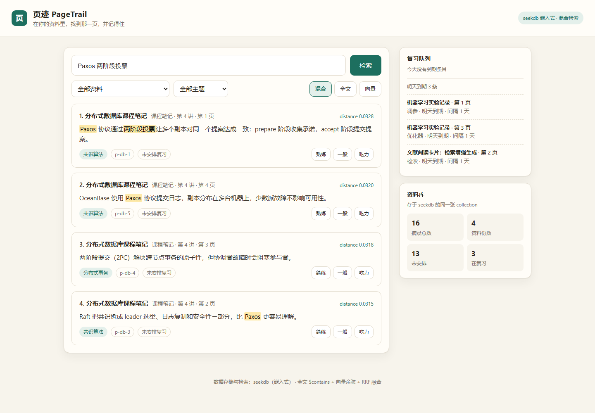
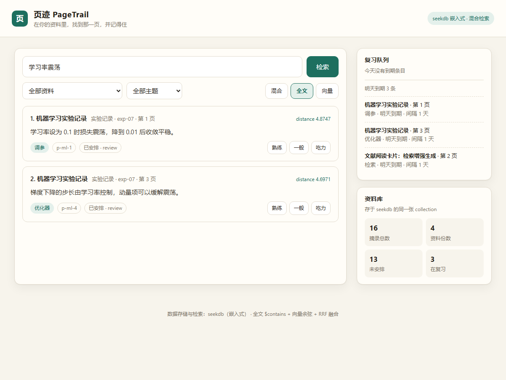

问题：资料在，但找不回来
这不是"缺少一个更强的搜索框"，而是资料、入口和复习节奏三件事同时断了。
同一件事写在三个地方
课程笔记记概念，实验记录记参数，论文卡片记别人的结论。真正需要时，你得挨个文件夹翻，还未必想起当时用的是哪个词。
只搜字面，搜不到意思
纯关键词检索要求你记得原句；纯向量检索又会返回"看起来相关"却不含关键词的段落。单用一路，结果总有一边是偏的。
没有复习节奏
划了重点、写进笔记，然后再也没打开过。资料的价值取决于第二次、第三次被看见，而现在没有任何机制把旧内容重新推到你面前。
它怎么解决
四个功能共用一份数据：检索结果就是复习对象，复习状态就写在检索到的同一行记录上。
三通道检索，一个入口
全文（$contains）、向量（余弦）、混合（RRF 融合）。界面上可以直接切换通道，看到同一句话在三路下排出的不同顺序。
每条结果都带出处
结果卡片上固定显示资料名、资料类型、第几讲、第几页，并高亮命中的词。你不用再猜这句话到底出自哪里。
结构化过滤
把查询限定在某一份资料或某一个主题内，过滤条件由 seekdb 的元数据查询执行，而不是取回结果后再筛。
复习排程写回同一行
对结果点"熟练 / 一般 / 吃力"，按简化 SM-2 算出下次到期日并写回记录的元数据；复习队列按到期日过滤，另起进程也能读回。
seekdb 在功能里做了什么
数据库不是"顺手存一下"，检索、过滤、状态回写三件事都由 seekdb 完成。
-
1
一个 collection 同时存正文、向量索引、全文索引和元数据
摘录正文与 doc_id / title / source / page / topic 以及复习状态字段放在同一行，检索与复习不需要跨表关联。
-
2
一次 hybrid_search 完成两路召回 + RRF 融合
全文分支走 where_document.$contains，向量分支走 query_texts，seekdb 内部按 RRF 合并并返回统一排序。
-
3
元数据过滤与状态回写
$and / $in / $lte 负责"限定资料 + 限定主题"和"到期队列"；评分结果用 update 写回同一行的元数据，换一个进程仍能读回。
# pagetrail/library.py —— 一次调用同时走全文与向量 result = collection.hybrid_search( query={"where_document": {"$contains": query}, "n_results": 4}, knn={"query_texts": [query], "n_results": 4, "where": {"doc_id": {"$eq": "doc-db"}}}, rank={"rrf": {}}, n_results=4, include=["documents", "metadatas"], )
界面
左侧检索与评分，右侧复习队列与资料库统计；顶部标签可切换全文 / 向量 / 混合通道。


运行说明与验证样例
不需要数据库服务、不需要 Docker、不需要任何 API Key；四个命令跑完全部验证。
- 进入 qoder 目录：
cd qoder - 创建虚拟环境：
python -m venv .venv，并激活（Windows 用.venv\Scripts\activate） - 安装依赖：
pip install -r requirements.txt（首次会安装 pyseekdb 与嵌入式引擎） - 运行验证：
python demo.py，看到 12/12 通过、退出码 0
可选：python -m pagetrail serve 打开 http://127.0.0.1:8765 体验图形界面；python -m unittest discover -s tests 跑 20 个单元测试。
# Linux / macOS cd qoder python -m venv .venv && source .venv/bin/activate pip install -r requirements.txt python demo.py # Windows PowerShell cd qoder python -m venv .venv; .\.venv\Scripts\Activate.ps1 pip install -r requirements.txt python demo.py
| 序号 | 检查内容 | 结果 |
|---|---|---|
| 01 | seekdb 嵌入式实例就绪，16 段摘录入库 | PASS |
| 02 | 查询「Paxos 两阶段投票」Top-1 命中 p-db-1 | PASS |
| 03 | 每条结果都带标题 / 来源 / 页码 | PASS |
| 04 | 查询「验证集过拟合」Top-1 命中 p-ml-2 | PASS |
| 05 | 全文与向量通道 Top-1 不同（两路确实互补） | PASS |
| 06 | 混合通道 Top-1 命中 p-ml-1 | PASS |
| 07 | 混合 Top-3 全部来自两路候选 | PASS |
| 08 | 过滤结果全部落在目标资料内 | PASS |
| 09 | 资料 + 主题双重过滤同时生效 | PASS |
| 10 | 评分写入正确的状态与间隔 | PASS |
| 11 | 到期队列按日期过滤正确（今天 0 / 明天 3） | PASS |
| 12 | 另一个进程读到相同的复习状态 | PASS |
Qoder 开发记录
需求拆解、技术选型、编码、调试、验证与文档都在 Qoder 内完成，迭代过程记录在仓库的 DEVELOPMENT.md。
- 选型：对比 seekdb 的嵌入式、服务端、Docker 三种接法，选择 pyseekdb 嵌入式——评审不需要起服务就能复现。
- 嵌入：默认嵌入会联网下载英文 ONNX 模型，改为项目内置的离线确定性哈希嵌入，保证断网环境结果一致。
- 调试：先后修复自定义嵌入类未注册、get 与 query 返回结构不一致、update 整块替换元数据三处问题。
- 验证：补出 12 项自检与 20 个单元测试；在 Linux 干净环境发现并修复了嵌入式引擎启动时机导致的连接失败。